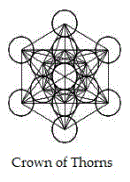

|
Souls whose spirits are deflated, impoverished,
exhausted, broken, depressed or, simply, tired are welcomed within the
Realm of Names if they call upon The Name of HaShem: not with their
vocal cords, but with their spirits. In these states, souls make no estimations of who they are and what life requires of them. They
are preoccupied with surviving from moment to moment; for they despair of finding relief.
Perishing from lack of vision and constantly sifting through
nuggets of
their thoughts in forlorn hope of finding some new mindset that may make
each successive moment more bearable, they find
no wisdom: no traces of spiritual gold.
A silver lining of understanding
eludes them, also; so they pan, listlessly, through the same cloudy streams of
thought over and over,
willing to settle for diversion.
Bogged down by piles
of mud and muck, they lament
the inadequacy of their endeavors; and they have trouble tolerating their
own
laments, because every tiresome sigh lowers expectations still further. Imprisoned by
thoughts and emotions, they endure as best they can for
so long as they can. They are spiritual paupers. Except the Father
should lift them up, they expect a rupture of the headwaters, as in the days of Noah.
Adam Kadmon, the "Projection of Man," is the symbol of the Tree of
Life. Kether is the topmost of its ten spheres, its sephirot. Often
referred to as "The Supreme Crown," Kether can be understood as the
sphere of intelligence, but natural intelligence cannot approach
Kether; for the crown of the unredeemed human mind is simply the tool by
which man has achieved dominion over
all other species on Earth, to his own harm and shame; and man's
intelligence continues to be leveraged as the means to subject less endowed creatures
to the rule of his will, at the peril of all who live.
Words are birds; and birds, taking flight, are arrows to the wise.
Spiritual Kether is like the canopy of the Tree of Life, and its branches are home
to the Word of HaShem, his silent counsel.
When rightly applied, intelligence is the faculty by which man can measure the movements of
God's Spirit within the frame of his own consciousness.
As man's branching thoughts are stirred, the
Life Breath energizes the cells of the human body and supplies the
spiritual oxygen needed to restore divine fire for the restoration of
all things.
The spark of divinity breathed into Adam in the Garden is never
completely extinguished within the least of men, but only those whose hearts
have been rekindled are able to lift their voices in righteous
supplication. With no expectation of further reward, they seek the faces of
HaShem, that they can understand the saying that God is good. Scales fall
from the eyes of such souls as the royal scepter is raised in welcome.
Reassured, they begin to see again.
The vision grows, clarifies, and shall become operative, but not by
anything the individual can do to further progress. Every gate is opened by an act of
God, who allows souls to enter when instruction has born fruit. This
truth was demonstrated in the ministry of Y'shua, who asked that the
woman at the well go and return, again, with her husband. The woman was no libertine,
as is commonly taught.
She was a spiritual adept, and she was on the sixth rung of Jacob's
ladder.
Natural man is haunted when exposed to the hidden Presence, which
he sees as alien to his natural self. When the Presence begins to
lift its head within him, therefore, his natural heart and mind struggle to
comprehend what is going on. Like dust arising from a pivot point upon
dry ground, the dilemmas raised by the Indwelling cannot be resolved by
willful efforts of the heart
and mind; for the new garment has threads with specific measurements
that must be braided together by
the skill of the Father's hands.
The root (heart) and the essence
(mind) of a man's natural intelligence
struggle together with concerns that seem imperative to the moment,
but mortal man is the seed of Elohim; and his immortal intelligence operates on scales far beyond what is revealed
in the confines of every-day thought. The path to full restoration of man's
immortal
measurement of this greater intelligence requires great humility, and the
impoverishment of the natural spirit is a vital first step. Man will
find joy in his sorrow as the tears dry from his eyes.
 King Solomon
asked who could measure "the spirit of Man that goes upward, and the spirit of the beast that goes downward to the earth."
Well, from both Hebrew and Greek scriptures, the words most commonly
translated as "spirit" are more properly rendered as "breath."
The movements of
human spirit in the King James version of the
Ecclesiastes parable, then, are likened to the inhale (the
downward trajectory of untainted air) and the exhale (the upward
trajectory of spent breath).
Air is the substance of the second
heaven, and when we breathe it in, it lifts us up, renews us.
However, the inhale makes us debtors to the atmosphere, and we have no
choice but to repay heaven with our exhales, which carry
the savor--the scent--of who we are and what we've been up to. We
breathe our transactions between heaven
and earth.
The exchange of the contrary winds of natural breath and divine
breath correspond to
the interplay of the two laws that drive the whirlwind of which Paul
wrote in Romans 7. Like all beasts of Earth, we inhale the Breath of Life,
and we exhale the savor of the utilization of the breath we draw, whether unto
life or unto death. Caught up by the whirlwind, the tainted residue of
our essence travels skyward with the exhale, where it merges with fresh
air and is cleansed of toxicity. Again made ready to be drawn downward again, toward the ground, where it
gives report of
the weight of its savor in celestial realms, that it might
arise, once again,
to the gates of paradise and the throne of Father
hy. We are reborn with every breath.
The Breath of
hwhy has been passed from
parent to child from the days of the first man, vivifying
humanity with the inward Presence of the Immortal One, who daily
humbles himself by dwelling within mortal tabernacles to engineer the
perfection of the creatures that hide in mortal bodies and souls.
From the moment of father Adam's first breath, the Projection of
hy--
his Cry, his Shout of Life-- entered mankind; and stewardship of that
divine breath transformed the first man, the creature of clay, into a living soul,
a creature of light. As
host of the Breath, the man Adam served as prototype of the temple
formed not by handiwork, but by the Projected
Breath of God. A son carries the father's breath forward, which is the reason Adam is
called a Son of God.
|